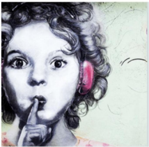
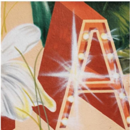

作品

01
蛻變 · Metamorphosis
里塔·奎斯瑪（Riitta Kuisma）· 芬蘭
這位芬蘭藝術家以其壁畫和肖像畫而聞名。她的大部分作品都以自然為主題，探索人類與自然的相互作用。她的作品遍佈北美、歐洲和亞洲許多國家的公共空間和私人收藏。
"三幅壁畫都以'蛻變'為靈感，彼此相輔相成。"
牆上的潑濺顏料和地上的火車代表了豐富的藝術元素。色彩斑斕的蝴蝶和手持長笛起舞的女孩象徵著音樂。通過色彩，活力、歡樂和積極的元素被注入到壁畫中，描繪了城市的蛻變過程。
02
經典好萊塢傳奇
艾爾莎·讓·迪厄（Elsa Jean de Dieu）· 法國
法國藝術家艾爾莎熱愛自然，熱衷於在鄉間長跑。作為其香港工作室的創意核心，她與創意團隊為每一面牆注入活力，用創意和色彩為社區帶來視覺藝術體驗。
"瑪麗蓮·夢露與唐寶雲的肖像，黑白與色彩的強烈對話。"
創作了諸如瑪麗蓮·夢露（Marilyn Monroe）和唐寶雲（Sally Tang Bao）等經典好萊塢傳奇人物的肖像。這些作品主要以黑白為主，背景、服飾和花朵則色彩斑斕，形成強烈對比，展現了 SOHO 地區藝術與音樂帶來的歡樂與激情。


03
城市森林 · Urban Forest
王尼爾（Neil Wang）· 香港
香港本土的壁畫藝術家和插畫師，深受日本流行文化和藝術的影響。他的作品運用抽象線條、圖案、書法、色彩、拼貼等元素，創作出獨特且風格鮮明的作品。
"藝術為我們帶來愉悅的氛圍，作品與環境完美融合。"
尼爾的作品與環境完美融合，從地面延伸至牆壁，直至空調和管道。畫中獨特的立體書法和一對來自西區的常見白鸚鵡，將我們帶入一片充滿生機與色彩的森林景觀。